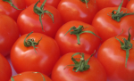

Moussieu l'Editeu,
Nos v'là dans la minsèthe, et tout à cause des fichues tomates. Né v'là bétôt tchînze jours que j'n'avons pas dormi, et hier au sé, après avé liut pour la traîsième fais un couplye d'livres que j'avions r'shu dans la s'maine j'vînmes à la conclûsion que n'y'avait qu'une chose à faithe, et ch'est d'vendre la ferme.
La Merrienne mé fait des r'proches et à trais heuthes à matin ou m'a envié un co-d'pid dans l'dos et m'a d'mandé si j'dormais.
"Nânin," j'y'ai dit, "je n'dors pon, et si tu n'peux pas qu'mandé tes djéthéts, va t'couochi dans la bouonne chambre. J'ai dêjà assez d'ma sans avé l'êpine du dos rompue. Laisse-mé trantchillye, j't'en prie."
"Ecoute," ou s'fait, "j's'y v'nue à y r'pensé. Après tout, ch'est ben du d'avé à vendre la ferme. Es-tu ben seux qu'nou n'pouôrrait pon trouvé tchique marchand tch'y s'sait prêt à accaté nos tomates? Pourtchi qu'tu n'vais pon en ville d'main au matin tâchi d'en trouvé yun tch'y nos hall'la d'chu pité ichin?"
"Comme tu l'sait," j'y'ai dit, "j'y fut sam'di et j'fis d'man mûs. Y taient tous d'la même opinion, que si je n'fichais pas man camp au pûs vite, y m'happ'thaient par la pé du co et m'fliantqu'thaient sûs l'pavé. Nânin-dja, je m'y'en vais pon."
"Et comme chonna," ou m'a dit, "tu t'en vas laissi les tomates pouôrri. As-tu caltchulé combain tchi t'ont couôté?"
"J'ai caltchulé," j'y'ai dit, "tchi m'ont couôté tant tchi m'ont mint souos l'fou."
"J'te dis dans l'temps qu'les bâtons taient trop chiers à treize louis l'mille."
"Ben seûx tchi taient trop chiers, mais enfin nou pouôrra tréjous les r'vendre."
"Vèthe, ach'teu qu'nou peut l's'accat touos neûs pour sept louis. Et ch'tait une mêprînze de donné les tomates à tâche à chinq louis l'mille. J't'avais tréjous dit que ch'tait trop, mais nânin, aussi ben paslé à un choutchet d'bouais. Ach'teu rain n'est péyi et tout est deu. J'sommes ben pathés. Oh, si seulement j'avais êcouté ma mèthe quand ou m'dit qu'jamais tu ne f'thais rain."
Enfin la v'la tch'y s'r'endort et m'laisse à mes réflections, tchi sont qu'un fermyi tch'y s'met à crâitre des tomates ouêsque y dev'thait crâitre du grain ou d'l'avaine ou tchiquechose pour ses bêtes est un imbécile. Si par chance j'peux persuadé mes créanciers d'arrêté un mio, j'vos promets que l'premié individu tch'y veindra ichîn m'pâslé d'tomates se trouv'tha ben vite les gambes en l'air.
Si j'sommes forchis d'la vendre la ferme j'vos f'thai à savé en temps et j'vos donn'nai la preumié chance. Y'en a dans les vingt-huit vregies, avec l'assiétte de maison et les patates ne gélent jamais si n'y'a pas d'obgélée. Y'a un mio d'bâs ichin et là, et tchiques tchérdrons, mais autrement, sinon pour les doques et l's'orchis, n'y'a presque pas d'serclye. en un mot la ferme est en bouonne ordre. V'nez la vais, tchique jour en pâssant.
Ph'lip
Viyiz étout: